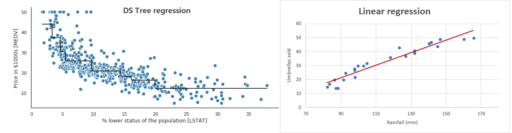

前情提要：
通俗得说线性回归算法（一）线性回归初步介绍
介绍完线性回归，那么我们来看看如何运用sklearn来调用线性回归模型，进行训练和预测。
def LinearRegression(fit_intercept=True,
normalize=False,
copy_X=True,
n_jobs=None
)
- fit_intercept：默认为true，参数意思是说要不要计算此模型的截距。 如果设置为False，则不会在计算中使用截距。
- normalize：正则化，默认是false。
- copy_X：默认是true，会复制一份x，否则会覆盖掉原有的x。
- n_jobs：指定多少个CPU进行运算，默认是None，表示1。如果设置为-1则表示使用全部cpu。import numpy as np
from sklearn.linear_model import LinearRegression
X = np.array([[1, 1], [1, 2], [2, 2], [2, 3]])
# y = 1 * x_0 + 2 * x_1 + 3
y = np.dot(X, np.array([1, 2])) + 3
reg = LinearRegression().fit(X, y)
reg.score(X, y)
#打印线性回归的相关系数，在二维空间中，就是斜率k
print(reg.coef_)
#打线性回归中的独立项，二维空间中的，b
print(reg.intercept_)
pre = reg.predict(np.array([[3, 5]]))
print(pre)这个例子取自sklearn官网，先是生成一个二维的x向量，然后对每个向量，根据公式生成y值。公式是
y = x11 + x22 + 3
得到y值后，拿去训练一个模型，由于公式已知，那结果自然也就知道了。训练好模型后，可以直接查看系数和独立项，也就是k和b。最后可以拿来预测数据了。
各位小伙伴可以运行一下自然就知道结果了。
回归分析是统计学中常见的一种分析方法，在之前也有讲过线性回归分析和梯度下降相关内容线性回归。那么这次，就来说说除了线性回归外，还有哪些回归分析方法。
以前有介绍过ID3决策树算法，不过ID3决策是不适合用作回归分析的，但如果用C4.5，那么就可以来进行回归分析。
我们都知道如果是离散值，那么可以直接选择某个类别作为分支。比如说有房，没房这种。但如果是连续的值呢？比如身上的现金，有人有10块钱，有人有11.5元，这种如果选择分支呢？
答案是通过遍历，遍历全部或部分连续值，尝试划分，计算损失函数（损失函数就不贴了，有兴趣可以百度详细的资料），然后选择一个最合适的划分（大于或小于这个值）。比如说，选5个人，这5个人身上的现金有[500,20,40,800,3000]，那么遍历这5个值，最终选到一个损失函数最小的值。比如取到800，那么就是[大于800]和[小于800]着两个区间。通过这种方式可以让决策树也实现回归分析，当然，分析结果和线性回归就不大相同了。
我在网上找了两个图，一看就知道树回归和线性回归的区别了。

左边的图就是树回归，右边是线性回归。树回归按段来划分，所以看起来像一棵树横着放。而线性回归基本上总是处理成一条直线来拟合。
回归树的主要优点，是能够对复杂的数据，以及非线性的数据进行建模。但如果是线性数据，一般线性回归会比回归树的效果好。
说到这个，就得先解释一下多重共线性这个问题了。
多重共线性:指多个自变量之间有高度相似或高关联性的现象。比如以房价预测为例，房屋面积和房间个数就是相关的，将这两个自变量一同作为特征，就容易出现多重共线性问题。
为解决多重共线性，就有了逐步回归的解决方法。逐步回归一个常见做法，就是先只有一个变量。逐渐加入其他特征，看看模型的效果会不会变好，如果变好了，就让这个特征加入模型中，否则不加。
这一过程不断迭代，直到没有其他特征。
当然限于篇幅，这里只是比较粗浅的介绍，有兴趣的小伙伴可以自己上网了解更多。
岭回归和套索回归也是为了解决多重共线性的问题，但和逐步回归从特征上动手脚不一样的是，岭回归和套索回归是从计算过程来尝试解决问题的。
这里引用一下脊回归（Ridge Regression）这篇博文中的介绍：
当设计矩阵XX存在多重共线性的时候（数学上称为病态矩阵），最小二乘法求得的参数ww在数值上会非常的大，而一般的线性回归其模型是 y=wTxy=wTx ，显然，就是因为ww在数值上非常的大，所以，如果输入变量xx有一个微小的变动，其反应在输出结果上也会变得非常大，这就是对输入变量总的噪声非常敏感的原因。
如果能限制参数ww的增长，使ww不会变得特别大，那么模型对输入ww中噪声的敏感度就会降低。这就是脊回归和套索回归（Ridge Regression and Lasso Regrission）的基本思想。
为了限制模型参数ww的数值大小，就在模型原来的目标函数上加上一个惩罚项，这个过程叫做正则化（Regularization）。
如果惩罚项是参数的l2l2范数，就是脊回归(Ridge Regression)
如果惩罚项是参数的l1l1范数，就是套索回归（Lasso Regrission）
今天主要介绍了sklearn中线性回归的参数，以及使用sklearn来训练线性回归模型。然后介绍了其他各个线性回归模型及主要作用和优缺点。
以上~
推荐阅读：
Windows上IDEA搭建最新Spark2.4.3源码阅读及调试的开发环境
Scala 函数式编程指南（一） 函数式思想介绍
通俗地说决策树算法（二）实例解析
大数据存储的进化史 --从 RAID 到 Hadoop Hdfs
C，java，Python，这些名字背后的江湖！